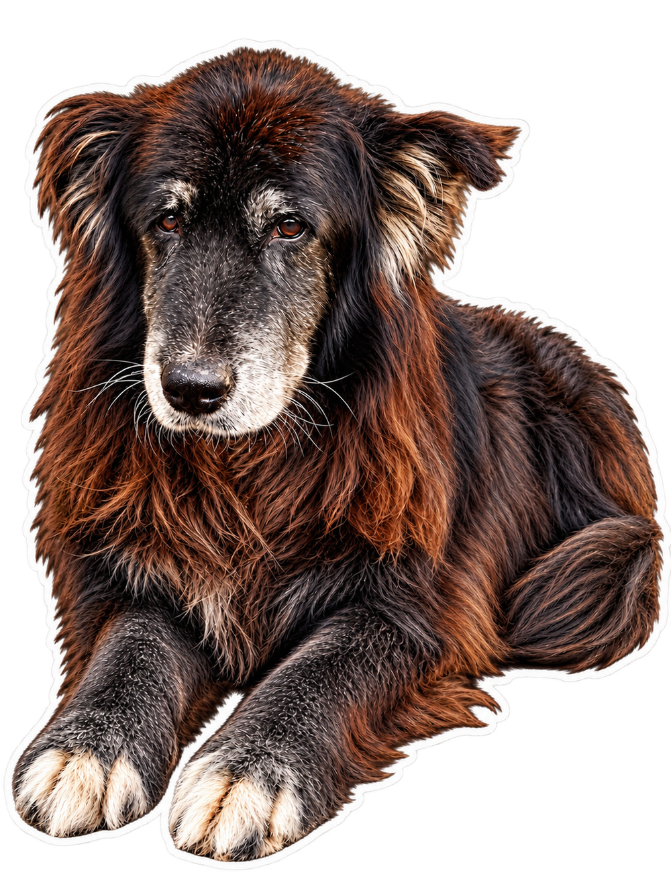
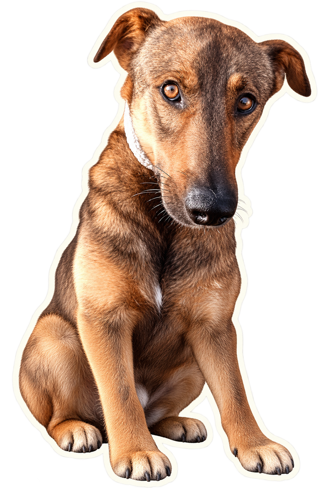
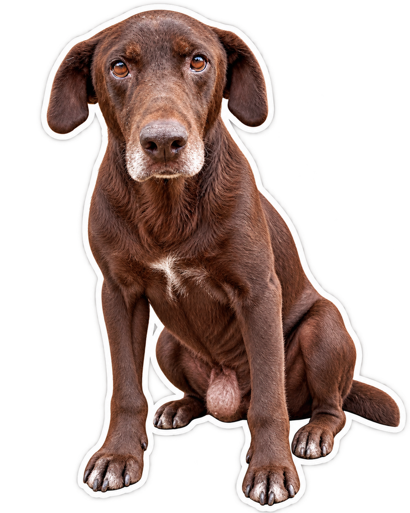
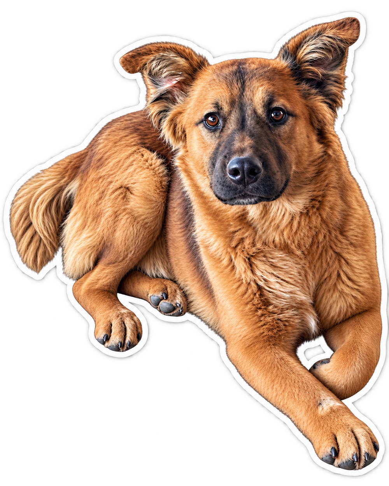
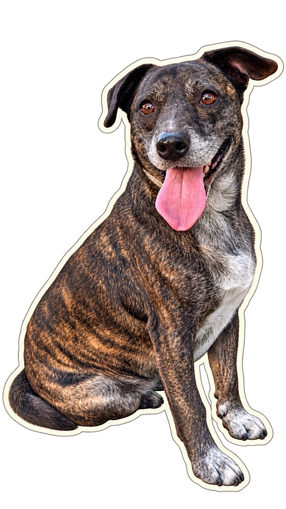
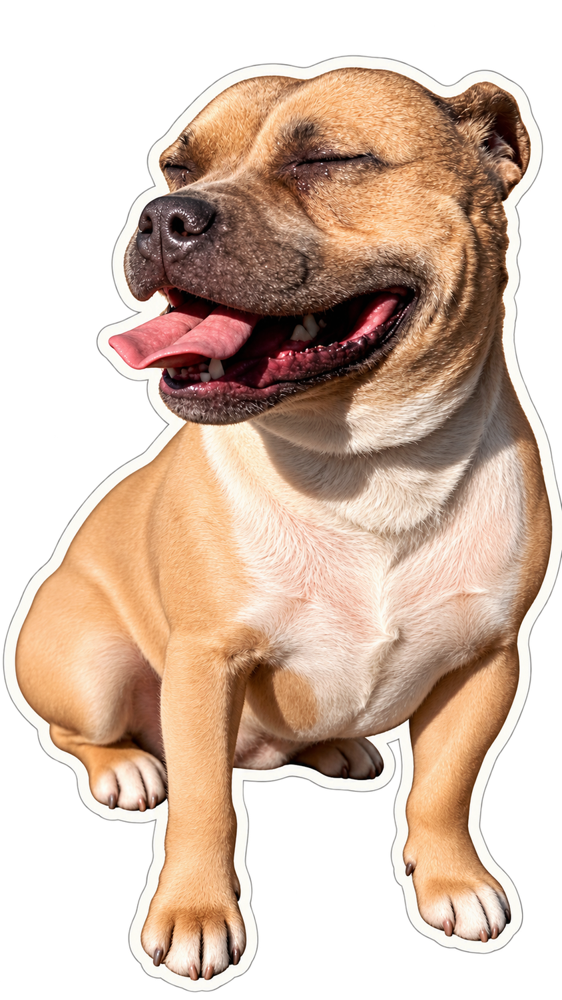
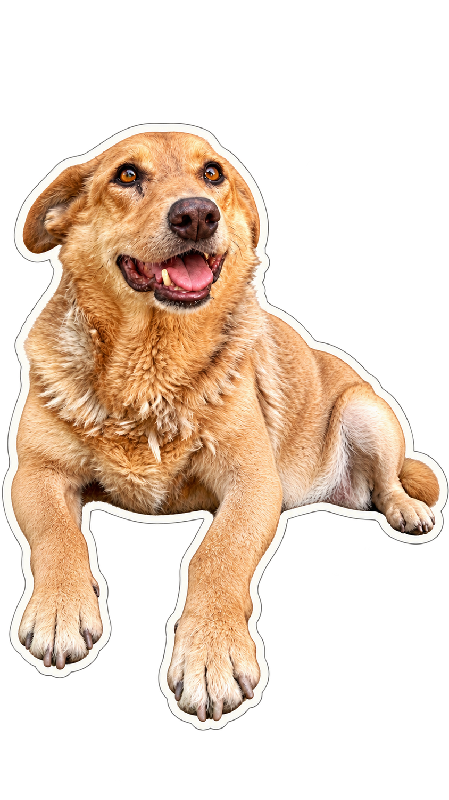
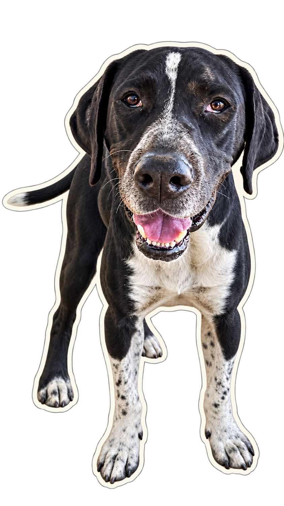

SHORT 01
Ver también en YouTube
ADOPCIÓN RESPONSABLE DE ANIMALES MAYORES
¿Importa
¿Importa
la edad?
El amor no tiene fecha de vencimiento. Los perritos del Centro de Reinserción Municipal están esperando una nueva oportunidad para tener un verdadero hogar.
Elegí el mayor acto de amor.

01 / NUESTRA CAMPAÑA
El mayor
El mayor
acto de amor.
ARAM busca cuestionar los prejuicios sobre la edad y acercar a más personas a la adopción responsable de animales adultos. Porque elegir también es mirar más allá de los años.
VIDEO OFICIAL DE ARAM · CAMPAÑA AUDIOVISUALVer en YouTube ↗
02 / LAS HISTORIAS
Mucho amor.
Mucho amor.
Muchas historias.
Detrás de cada mirada hay una historia única. Conocé a los protagonistas de nuestra campaña y descubrí cómo acompañarlos.
5 AÑITOS

NACER POR SEGUNDA VEZ
Ortega
Ha sufrido mucho maltrato y por
eso necesita una familia responsable de por vida, que le de
mucho amor y le enseñe que no todos los humanos somos iguales.
10 AÑITOS
UNA DÉCADA DE RESILIENCIA
Lázaro
Es el tranquilo, noble y agradecido. No necesita grandes espacios, ni actividad constante, ni aventuras. Por su historia y por su edad, solo necesita paz.
4 AÑITOS

LA BATALLA DE UN VALIENTE
Chocolate
Después de tanto sufrimiento, este
luchador todavía tiene un sueño pendiente: encontrar una familia que le brinde la contención y el cariño que se merece
3 AÑITOS

UNA DULCE COMPAÑERA
Brownie
Ella estuvo muchos días internada en grave estado, la fue luchando solita y finalmente se recuperó. Hoy goza de salud, pero precisa de lo más importante: una familia.
5 AÑITOS

LA CRUDEZA DEL ABANDONO
Sandrita
Ella no entiende por qué fue rechazada tantas veces, pero
quizás vos puedas darle a ella ese hogar que hace tanto espera...
3 AÑITOS

RELLENITO DE AMOR
Cañita
Este es un bello gordito que si le abrís tu corazón y le das un lugar en tu familia, va a ser el mejor compañero que hayas tenido.
6 AÑITOS

CALLEJERA DE PURA CEPA
Allegra
Toda una vida en las calles de la ciudad, vagando solita entre la desidia y el maltrato. Llegó con ganas de cambiar su vida...
Conocer más7 AÑITOS

EL GUARDIÁN MIMOSO
Eusebio
Siempre le ha encantado cuidar a su jauría, ahora espera ansioso por una manada de humanos a los que proteger.
Conocer más03 / HISTORIAS QUE emocionan
Nuestro YouTube
Nuestro YouTube
canino.
Dos piezas breves para mirar, compartir y seguir difundiendo nuestro mensaje.
SHORT 02
Ver también en YouTube
04 / CATÁLOGO PERRUNO
Historias
Historias
que conmueven.
Un recorrido por la vida de los protagonistas de ARAM.
05 / FORMAS DE AYUDAR
Hay muchas
Hay muchas
formas de amar.
Adoptar no es la única manera de ayudar. Podés abrir las puertas de tu casa transitoriamente, compartir la campaña o consultar cómo colaborar.
TRÁNSITO ANIMAL
Que tu casa sea el nexo con su futuro hogar.
Completá con tus datos y formá parte de la comunidad que brinda tránsito a los animalitos que esperan ser adoptados...
06 / ENCONTRANOS
Acercate
Acercate
al amor animal.
El proyecto se vincula con el Centro de Reinserción Municipal de Río Cuarto. Consultá antes de acercarte para coordinar una visita o una adopción.
CENTRO DE REINSERCIÓN MUNICIPAL
Río Cuarto,
Río Cuarto,
Córdoba.
Ruta Nacional 8 · Km 602
Río Cuarto, Córdoba, Argentina
Seguinos y escribinos
Instagram @zoonosisriocuarto↗WhatsApp+54 9 358 438-6462↗Correo electrónicoaramrioiv@gmail.com↗ARAM · ADOPCIÓN RESPONSABLE DE ANIMALES MAYORES
Elegí el mayor
Volver a las historias ↑